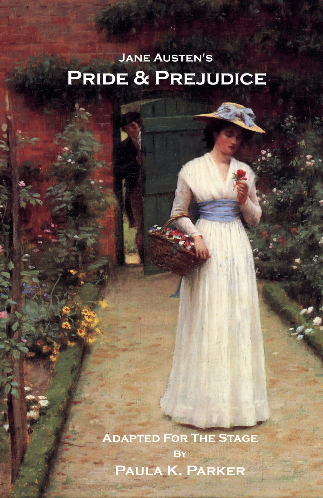

Nicole Fiorante
500790792
- 1811
- Jane Austen's first novel
- First published anonymously
- The novel follows the three Dashwood sisters as they must move with their widowed mother from the estate on which they grew up, Norland Park. Because Norland is passed down to John, the product of Mr. Dashwood's first marriage, and his young son, the four Dashwood women need to look for a new home. They have the opportunity to rent a modest home, Barton Cottage, on the property of a distant relative, Sir John Middleton. There they experience love, romance, and heartbreak.
- Film adaptations include Sense and Sensibility (1995) starring Emma Thompson, directed by Ang Lee

- 1813
- Jane Austen's most well known and popular novel, with over 20 million copies sold
- Originally titled First Impressions
- The novel follows the character development of Elizabeth Bennet, the dynamic protagonist of the book who learns about the repercussions of hasty judgments and comes to appreciate the difference between superficial goodness and actual goodness. Its humour lies in its honest depiction of manners, education, marriage, and money during the Regency era in Great Britain.
Mr. Bennet of Longbourn estate has five daughters, but his property is entailed and can only be passed to a male heir. His wife also lacks an inheritance, so his family will be destitute upon his death. Thus it is imperative that at least one of the girls marry well to support the others, which is a motivation that drives the plot. The novel revolves around the importance of marrying for love, not for money or social prestige, despite the communal pressure to make a wealthy match.
- Film adaptations include Pride and Prejudice (2005) starring Keira Knightley, directed by Joseph Wright
- 1814
- Did not recieve any public reviews until 1821
- Considered to be vaguely autobiographical
- The novel tells the story of Fanny Price, starting when her overburdened family sends her at age ten to live in the household of her wealthy aunt and uncle and following her development into early adulthood. From early on critical interpretation has been diverse, differing particularly over the character of the heroine, Austen's views about theatrical performance and the centrality or otherwise of ordination and religion, and on the question of slavery.
- Film adaptations include the UK film Mansfield Park (1999) starring Frances O'Conner, directed by Patricia Rozema
- 1815
- Jane Austen wrote this book with the intention of making the main character unlikeable
- The last novel Jane Austen completed and published before she died
- A novel about youthful hubris and romantic misunderstandings. It is set in the fictional country village of Highbury and the surrounding estates of Hartfield, Randalls and Donwell Abbey, and involves the relationships among people from a small number of families.
- The hit movie Clueless (1995) starring Alicia Silverstone and directed by Amy Heckerling, is loosely based on Emma
- 1818
- The first novel to be completed by Jane Austen, though it was not published until after her death
- A parody of Gothic fiction, which was very popular at the time of writing
- The story revolves around Catherine Morland, the young and naïve "heroine", and her journey to a better understanding of herself and the world around her.
- Ruby in Paradise starring Ashley Judd is loosely based on Northanger Abbey
-
- 1818
- Published six months after Jane Austen's death
- The last fully completed novel by Jane Austen
- The story concerns Anne Elliot, a young Englishwoman of 27 years, whose family is moving to lower their expenses and get out of debt. They rent their home to an Admiral and his wife. The wife’s brother, Navy Captain Frederick Wentworth, had been engaged to Anne in 1806, and now they meet again, both single and unattached, after no contact in more than seven years. This sets the scene for many humorous encounters as well as a second, well-considered chance at love and marriage for Anne in her second "bloom".
- Persuasion has no known film adaptations
- 1871
- Possibly written in 1794
- Published 54 years after Jane Austen's death
- It is about the horrible flirt Lady Susan Vernon, a widow in her thirties who has an affair with a married man. After her husband's death she stays with her brother and his family and soon enchants the handsome, friendly but naïve and idealistic Reginald de Courcy, who is her brother-in-law.
- Lady Susan has no known film adaptations